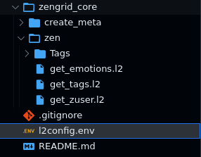
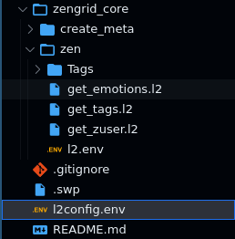

The l2 Format
Find in this page an informal description of
the rules for authoring .l2 API files. This
document expects some familiarity with Lama2.
To quickly get started with Lama2, head over to Examples.
On the other hand, if you are a developer and wish to learn more about the formal grammar underlying l2, visit the Grammar section.
Comments start with #¶
Lines starting with # are comments and hence ignored altogether
All HTTP Verbs supported - including the common GET/POST/PUT¶
Fully supported: GET|HEAD|POST|PUT|DELETE|CONNECT|OPTIONS|TRACE|PATCH
JSON is the default submission type, but MULTIPART is supported too¶
varjson is a simpler syntax to specify flat JSONs¶
varjson values are defined as follows:
hello=world
foo=bar
The above results in a JSON submission of the form:
{
"hello": "world",
"foo": "bar"
}
Nested JSON can simply be dumped at the end of the document¶
The JSON recognition engine is quite lenient. It can deal with minor errors in the format (such as having single quotes instead of double quotes, trailing garbage, or an extra comma after the last element in an array,).
POST
https://httpbin.org/post
{
"a": "b",
"c": "d"
}
MULTIPART allows both file uploads & the usual fields¶
Example:
POST
MULTIPART
http://localhost:8000/register
userid=lince5
file@./helloworld.jpg
Note
The file path is relative to the request file.
Cookies are sent as headers¶
Cookies are specified in a Cookie header as follows:
Cookie:'sessionid=foo;another-cookie=bar'
Environment Variables: Switch base URL¶
API variables can be defined in apirequest.l2¶
Variables are declared within the JS processor block and serve as dynamic placeholders for data used in API requests. By utilizing these variables, L2 enables flexibility and reusability in defining API endpoints and data payloads.
Example login.l2:
let REMOTE = "httpbin.org"
let EMAIL = "customer1@gmail.com"
---
POST
${REMOTE}/login
{
"email": "${EMAIL}",
"password": "customer1@gmail.com"
}
Get Source Files
API environment variables can be defined locally in l2.env¶
L2 provides a convenient way to define environment variables through the l2.env file. This file is automatically searched for in the present directory, and its contents are loaded to create a set of variables(local).
In the l2.env file, you can specify environment-specific values for variables used in your L2 scripts, such as URLs, authentication tokens, or any other data that may vary depending on the environment in which the API requests are executed.

Go to Example
Get Source File
API environment variables can be defined at project root using l2config.env¶
The l2config.env file serves as a centralized storage for environment variables located at the project root, streamlining the management of configuration settings across all L2 scripts. With this file present, every L2 script within the project automatically inherits the defined variables, effectively eliminating the necessity to duplicate configurations in individual subdirectories using l2.env.
The search for l2config.env extends from the present directory up to the root directory (/). During this process, the variables defined in the root file are loaded and made available for use in all relevant scripts. This approach significantly enhances efficiency and maintainability, as it ensures consistent settings throughout the project while reducing redundancy in configuration data.

Go to Example
Get Source File
If l2config.env(root) variables are redeclared in l2.env(local)¶
In situations where both root and local variables share the same variable name, the local variable takes precedence over the root variable. This behavior remains consistent, even if both l2config.env (root) and l2.env (local) files reside in the same directory. The local variable's value will always be considered over the root variable, ensuring that specific configurations defined at the local level effectively override any corresponding settings present in the root file. This approach provides developers with granular control and flexibility in tailoring environment variables to suit specific needs within different parts of the project while maintaining the overall structure and organization of configuration settings.

Go to Example
Get Source File
The environment file can load results of commands¶
Use the backtick notation \command`` to place the results of
commands into environment variables:
export PHOTO=`base64 image.jpeg`
One can load the PHOTO variable in API files.
Chain requests through Javascript blocks¶
Lama2 supports plain Javascript (JS) blocks as a glue for manipulating responses and passing on values to later stages. At a higher level, a chain of requests may look like:
Javascript 1
---
L2 Request 1
---
Javscript 2
---
L2 Request 2
The triple-dash (---) separator is mandatory. The special
variable result contains the response from previous stages.
For example, in the above case, Javascript 2 can access the response from L2 Request 1 through the result variable.
Learn more about request chaining in Examples.